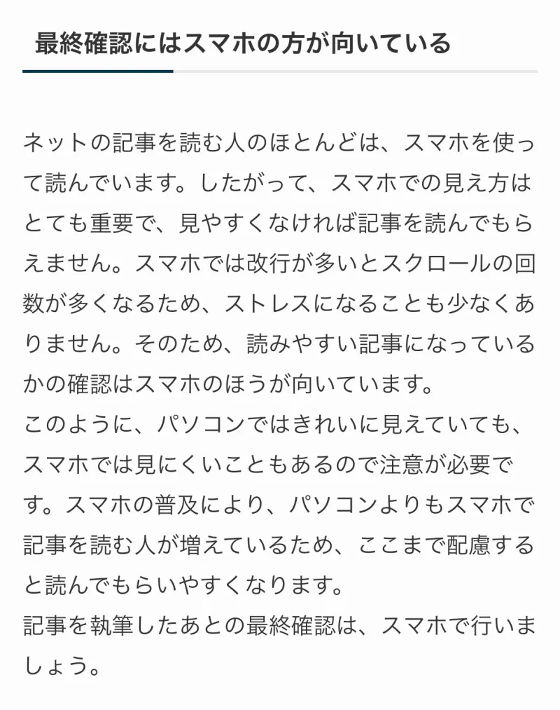

Webライターはスマホだけでは稼げない！パソコンとの併用がおすすめ
「スマホだけでWebライターの仕事がしたい」
「スキマ時間を有効に使いたい」
「スマホで稼ぎたい」
Webライターの仕事を始めたいけど、このように「スマホだけでやりたい」と思っている人もいるのではないでしょうか。
しかし、スマホだけでは思うように稼げません。
Webライターの仕事は、むしろパソコンとスマホを上手に使い分けたほうが楽です。
 まつお
まつお実際に、現役Webライターの筆者も日頃からパソコンとスマホを使っています。
この記事では、以下のことがわかります。
- Webライターがスマホとパソコンを併用した方がいい理由
- スマホだけでできる求人は限られている
- パソコンとスマホの併用活用例
特に副業でWebライターを始めたいと思っている人は、両方を使い分けるのがおすすめです。
Webライターがスマホとパソコンを併用した方がいい理由
Webライターの仕事はパソコンがなくてもできますが、できる仕事が限られます。
それぞれに特徴があり、向いている作業とそうでないものがあるからです。
特に、時間に制約がある人は併用をおおすすめします。その理由は、以下のとおりです。
- それぞれのいいとこ取りができる
- 時間を効率化できる
- 最終確認にはスマホの方が向いている
それぞれ、どのような作業に向いているか見ていきましょう。
それぞれのいいとこ取りができる
パソコンとスマホの両方を使うと、それぞれの不便な部分を補えるため作業効率が上がります。
それぞれのメリット・デメリットをまとめました。
| 項目 | パソコン | スマホ |
|---|---|---|
| メリット | ・入力しやすい ・画面が大きい | ・スキマ時間に使える ・メールをすぐに確認できる |
| デメリット | ・起動に時間ががかる ・スキマ時間には適さない | ・操作性が悪い ・画面が小さく見にくい |
大きく分けると、スマホの良さはスピード性でパソコンの良さは操作性です。
このように、スマホとパソコンはそれぞれのデメリットを打ち消し合う関係にあります。
たとえば、電車の中などパソコンが使えない環境では、スマホを使って作業するのがおすすめです。
時間を効率化できる
スマホを使うメリットは、なんと言っても手軽さです。
たとえば、文章の構成づくりやリサーチなどは、パソコンを使わなくてもできます。
通勤途中の電車の中や、ちょっとしたスキマ時間のリサーチは、むしろスマホのほうがすぐれているでしょう。
まつおもしスマホを使わなかったら、この作業は家に帰ってからすることになりますね。
特に、副業でWebライターをやろうと思っている人は時間の確保がしにくいため、スマホとパソコンを併用すると無駄なく作業できます。
最終確認にはスマホの方が向いている
ネットの記事を読む人のほとんどは、スマホを使って読んでいます。
したがって、スマホでの見え方はとても重要で、見やすくなければ記事を読んでもらえません。
スマホでは改行が少ないと、文字が詰まって見えにくくなります。
以下は、実際にスマホで見た画面です。

まつお文字が詰まりすぎていて、読みにくいのがわかると思います。
そのため、読みやすい記事になっているかの確認はスマホのほうが良いです。
スマホの普及により、スマホで記事を読む人のほうがが増えているため、ここまで配慮すると読んでもらいやすくなります。
記事を執筆したあとの最終確認は、スマホで行いましょう。
スマホだけでできるWebライターの求人は限られている
そもそも、ほとんどの案件がパソコンを使うのが前提となっている求人が多いです。
そのため、スマホでできる仕事は限られています。
しかし、スマホだけで移動中やスキマ時間を使って稼げるのは魅力的です。
大きくは稼げませんが、スマホだけでできる案件もあります。
主に以下の2つです。
- アンケート
- 口コミ・レビュー
順番に見ていきましょう。
アンケート
アンケートは、それほど時間もかからず、スキマ時間で作業ができるのでおすすめです。
設問に答えていく作業のため、特別な技術も必要なくスマホで回答するのに向いています。
選択肢の中から回答するものや感想を書くものがほとんどで、募集件数も多いです。
まつお特別なスキルがなくても気軽に始められます。
ただし、アンケートの報酬は1案件あたり数十円ものが多いため、思ったほどは稼げないと思ってください。
口コミ・レビュー
口コミ・レビューは一般的な記事とは異なり、500字程度の文字数の場合が多いです。
しかし、これもスマホからでも取り組みやすいでしょう。
口コミ・レビューは、商品やサービスを利用した感想を書く仕事のため、特別なスキルもいりません。
ただし、体験談になるため、使ったことがない場合は、作業する前に商品やサービスを使ってみる必要があります。
そのため、すぐには仕事に取りかかれません。
口コミ・レビューも報酬は数百円程度の場合がほとんどです。
パソコンとスマホの併用活用例3選
パソコンとスマホの併用がおすすめですが、実際にどのように使い分けたらよいのか気になる人も多いでしょう。
実際に、どのような使い方をすれば効率よくWebライターの仕事ができるのか、筆者の併用方法を3つ紹介します。
- Googleドキュメントを使う
- 音声入力機能を使う
- クライアントとの連絡に使う
大幅な時間短縮になるので、参考にしてください。
Googleドキュメントを使う
Webライターは、Googleドキュメントで記事を書くことがほとんどです。
Googleドキュメントとは、Googleが無料で出しているWordに似た文章作成ソフトで、オンライン上で使います。
まつお納品はこのGoogleドキュメントのURLを添付する形です。
スマホアプリも用意されており、パソコンと同期ができるため、スマホでも修正できるメリットがあります。
通勤途中の電車の中や、ちょっとした時間に確認や修正ができるので、アプリを入れておくと便利です。
業務効率化のための必須アイテムと言ってもよいでしょう。
音声入力機能を使う
Googleドキュメントには音声入力機能がついています。
そのため、キーボード入力が苦手な人でも文章入力が可能です。
たとえば、読んでいて文章を追加したい時などに、わざわざ文字入力しなくてもその場でスマホに喋るだけで加筆できます。
「スマホの画面は小さくて入力したくない」という人は、ぜひ使ってみてください。
音声入力はスマホとパソコンの両方で使え、とても便利な機能なので音声入力は有効に活用しましょう。
なお、わかりやすい文章を書くコツを「Webライター初心者必見！わかりやすい文章を書くたった9つのコツ」で紹介しているので、気になる人は読んでみてください。
クライアントとの連絡に使う
ライターの仕事をしていると、クライアントと連絡を取る機会が増えます。
特に副業の人の場合は、頻繁にパソコンを開くのはむずかしいため、スマホで確認ができると便利です。
連絡手段としてよく使われる「Chat Work」は、スマホアプリも用意されており、外出先でもすぐに連絡できるのでぜひ導入しましょう。
クライアントとのやりとりは、スマホのほうが圧倒的に便利です。
ただし圧縮ファイルなどはスマホでは処理しづらいため、あくまでもメッセージの連絡手段としての使い方になります。
Webライターはスマホもパソコンも使ったほうが稼げる
Webライターの仕事は限定的な仕事ならスマホでもできますが、画面が小さく長文の入力に適していません。
しかし、スマホは気軽に使えるため、移動時間などには重宝します。
スキマ時間は、スマホでリサーチやメモを残し、自宅に帰ってパソコンで作業すると無駄がありません。
アンケートやレビューなどで、月1万円ほど稼ぎたいならスマホでも構いませんが、それ以上稼ぎたい人はパソコンも使いましょう。
採用・人事やAI活用のご相談を受け付けています
記事の執筆、採用支援、AI導入支援など、まずはお気軽にご相談ください。
ご相談はこちら